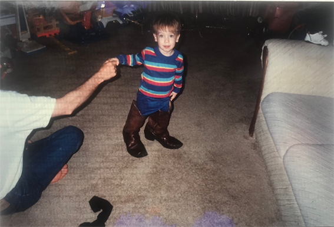

The Cowboy/Gypsy Boot
David Matteson

How might the humanities lead us to a sense of justice? In the spring of 2019, this question served as my focus of inquiry after learning of the tragic deaths of Timothy Dean and Gemmel Moore, two black gay men who fell victim to the predator Edward Buck. Dean and Moore both lethally overdosed on methamphetamine eighteen months apart in Buck’s Los Angeles apartment. Despite a reputation for luring susceptible men to his home and paying them to “slam” the dangerous drug, Buck was not arrested after the second death. It was not until a third man nearly overdosed later that year that the US Attorney brought charges against Buck. The press claimed this delay in arrest was due to Buck’s status as a Democratic donor and political influencer. It was a case where power imbalance had evident lethal consequences.
As this case unfolded, I was concurrently developing a wide image through the approach outlined by Gregory Ulmer in Internet Invention. As part of this process of self-discovery, I reflected on the formative institutions of career, family, community, and entertainment. Recognizing patterns that arise across these institutions led to my acknowledgement of an image of widescope, or a representation of my metaphysical position, moral beliefs, and mood. Ulmer outlines various exercises that assist the mystorian, or explorer, as he divines this wide image. Many of these exercises rely on the study of images, what Ulmer identifies as electracy’s primary mode of communication.
Through an analysis of family photographs, maps, community folklore, popular culture, and other personally significant media, I discovered that my image of widescope is a cowboy/gypsy boot. My understanding of this emblem relies on its protective function and its significance as an aesthetic symbol of identity—the modern cowboy dress boot is often custom designed and decorated to reflect attributes of the wearer’s personality. Cowboys are not the only ones who wear these types of boots. During a subsequent exercise, I recognized that these are also worn by Stevie Nicks during Fleetwood Mac’s “Gypsy” music video, in which the singer portrays an Americanized stereotype of a “gypsy” linked more so with bohemian aesthetics than with the cultural specifics of the Romani people. The boot is gender malleable, worn by two archetypes, the cowboy and the gypsy, who have seemingly oppositional traits, but they are unified through the wearing of the boot. In recognizing what I reflexively entitle a “gypsy/cowboy binary,” I intend not to validate reductive and pejorative stereotypes, but to reflect on the cultural mood evoked through the (mis)representation of these identities, and to explore the gendered framework that these pejoratives evoke. My recognition of the gypsy and the cowboy’s attributes inform my understanding of other oppositional individuals: in this case, it has guided my thinking about predator Buck and his victims Moore and Dean.
After identifying this wide image, I return to Dean and Moore’s tragic case in the hope of greater understanding—recognizing that it is through empathy that we may lay the groundwork for justice. The investigation concludes with the application of this newfound perspective to my role as an educator who works with at-risk, LGBTQ youth. Overall, this process of self-recognition and discovery has further prepared me to shape community and inspire change.
About the Author
David Matteson
David Matteson is the Associate Curator of Education and Outreach at the Orlando Museum of Art, where he develops and facilitates programs for diverse audiences of all ages, backgrounds, and abilities. He is also a PhD candidate in the Texts and Technology program at the University of Central Florida, where his research broadly focuses on digital curation, public history, and museum education.